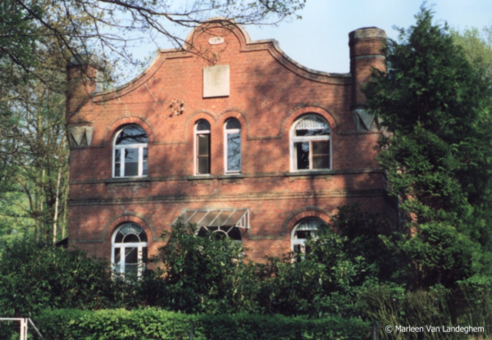

Introduction: The Heide Synagogue, located at Leopoldstraat 58 in the municipality of Kalmthout, holds a unique and significant place in Belgian Jewish history. Built in 1929, it has the distinction of being the only synagogue in Belgium constructed outside a major metropolitan area, serving as the religious heart for the thriving Jewish resort community of Heide.
History & Origins
During the interwar period, Heide grew rapidly as a popular summer holiday destination and residential area for Antwerp’s Jewish families, many of whom worked in the diamond industry. To accommodate the religious needs of the seasonal and year-round population, local community leader Mendel Kornreich championed the construction of a permanent synagogue.
The synagogue was officially inaugurated in 1929. Designed in a modest yet beautiful architectural style that blended with the wooded surroundings of Kalmthout, it became the focal point of community life in Heide, hosting daily prayers, Shabbat services, and community gatherings throughout the spring and summer months.
World War II & Preservation
The German invasion of Belgium in May 1940 and the subsequent Holocaust tragically put an end to the vibrant Jewish life in Heide. The synagogue was closed, and many of its congregants were deported or forced into hiding. Following the war, the Jewish community of Heide did not recover its pre-war size, and the synagogue building fell into a long period of disuse and neglect.
In recent years, the synagogue has been saved from decay thanks to the dedicated efforts of the non-profit organization VZW Synagoge Heide. The building has been meticulously restored and preserved as a protected historic monument and cultural center. Today, it stands as a moving memorial to the pre-war Jewish presence in Kalmthout and continues to host cultural events, exhibitions, and educational visits.
Community Archive
